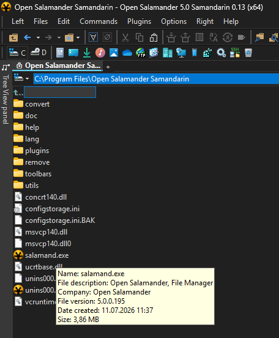
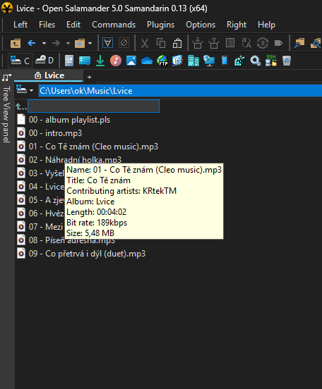

Detached panels and tabs
- Use each panel side in a separate full window.
- Detach an individual tab from its context menu or by dragging it outside the main window, keep it across sessions, and attach it again to either side.

Fast and reliable two-panel file manager for Windows 11 enhanced with modern features.
Feature guide
Customize a dual-pane workspace that scales across displays and adapts to tabs, metadata, tools, and independent windows.


Shift+Num / to open the configured shell as administrator.